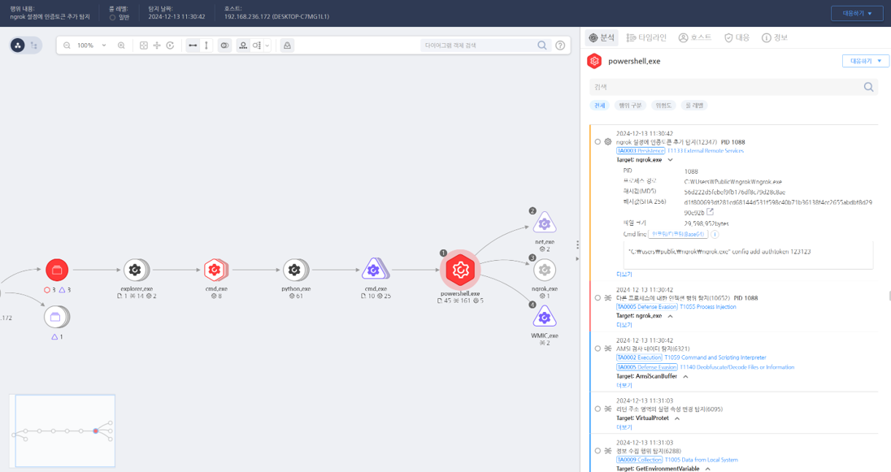

T1133.000.04 상용 도구 다운로드
D3FEND
MITRE ATT&CK 액션을 기준으로 대응 방안을 작성
Detection
- process_name : powershell.exe AND
- Action : Process-Create AND
- file_name : ngrok.exe AND
- cmd_line contains : "config"
- cmd_line contains : "add-authtoken"
Detection(EDR)

Response
- 이벤트 분석
- 상용 도구 다운로드 요청 발생 시, 해당 파일의 서명 및 출처를 검증.
- 다운로드된 도구가 비인가된 도구 목록에 해당하는지 확인.
- 로그를 통해 누가, 언제, 어떤 URL에서 다운로드를 시도했는지 추적.
- 격리 및 조사
- 다운로드된 파일을 샌드박스 환경에서 실행하여 의심 활동 분석.
- 도구가 정상적으로 사용되는지, 아니면 악용 가능성이 있는지 기능 점검.
- 정보 차단
- 다운로드된 상용 도구가 불필요하거나 위험할 경우, 즉시 제거.
- 해당 도구를 제공한 사이트에 대한 접속 차단.
Mitigations
- 시스템 하드닝
- 승인되지 않은 출처로부터의 다운로드를 방지하기 위해 애플리케이션 화이트리스트를 설정.
- 관리 계정만 상용 도구 설치 및 사용 권한을 갖도록 구성.
- 접근 통제
- 네트워크 레벨에서 소프트웨어 다운로드 URL을 필터링하고, 신뢰할 수 있는 리포지토리만 허용.
- 사용자 별로 소프트웨어 다운로드 권한을 제한하며, 다운로드 시 관리자 승인을 요구.
- 모니터링 및 탐지
- SIEM 솔루션에서 특정 소프트웨어 다운로드 URL이나 파일 해시를 기반으로 경고 규칙을 설정.
- 과도한 소프트웨어 다운로드 시도를 탐지하여 관리자에게 알림.
Affected Techniques
Action 실행시 함께 영향을 받는 다른 Techniqes
| D3FEND |
| D3-FIM File Integrity Monitoring |
| D3-FA File Analysis |